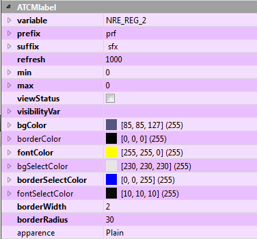

Wenn Sie das Element auswählen, erscheinen seine Eigenschaften im rechten unteren Fenster des Qtcreator-Fensters im Abschnitt ATCMlabel. Durch die Änderung einer oder mehrerer dieser Eigenschaften können Sie das grafische Erscheinung und einige Funktionen anpassen. Um die Änderung vorzunehmen, wählen Sie die rechte Spalte der entsprechenden Zeile.

Im Detail werden die Features zur Verfügung stehen:
variable: um die Zielvariable des Crosstable definieren, in die der aktuelle Wert des Label geschrieben werden soll, müssen Sie den Namen der Zielvariablen eingeben.
prefix: Präfix, das in das Label neben dem Wert angezeigt werden soll.
suffix: Suffix, das in das Label neben dem Wert angezeigt werden soll.
refresh: Aktualisierungszeit des Objekts, ausgedrückt in Millisekunden.
max: maximal zulässiger Wert.
min: minimal zulässiger Wert.
viewStatus: wenn angekreuzt, wird es eine rote oder grüne Farbe haben, je nachdem, ob die Konfiguration der statusvar-Variablen fehlgeschlagen ist oder nicht und ob der Rand sichtbar ist.
visibilityVar: Wenn Sie die Sichtbarkeit des Objekts entsprechend dem Zustand einer Variablen verknüpfen möchten, müssen Sie den Namen der Zielvariablen eingeben.
format: gibt an, in welchem Format der Wert angezeigt werden soll: dezimal, hexadezimal oder binär.
Im Detail wird für den grafischen Aspekt zur Verfügung stehen:
bgColor: bestimmt die Hintergrundfarbe des Objekts.
borderColor: bestimmt die Farbe der Kante des Objekts, nur wenn die Dicke der Kante größer als Null ist.
fontColor: bestimmt die Farbe des Textes des Objekts.
bgSelectColor: ist ähnlich wie bgColor, wenn das Label gedrückt wird, um den Wert einzugeben.
borderSelectColor: ist ähnlich wie borderColor, wenn das Label gedrückt wird, um den Wert einzugeben.
fontSelectColor: ist ähnlich wie fontColor, wenn das Label gedrückt wird, um den Wert einzugeben.
borderWidth: ist die Dicke in Pixeln der Kante des Objekts.
borderRadius: ist der Krümmungsradius der Kanten des Objekts.
apparence: ist der Stil, mit dem Sie das Objekt anzeigen möchten.
HINWEIS: In allen Eigenschaften, mit Ausnahme der ATCMplugins, ist es möglich, die “Context Help” von Qt anzuzeigen, um eine Beschreibung der Operation zu erhalten: Wählen Sie die gewünschte Zeile aus und drücken Sie die Taste “F1” der Tastatur.
Um die Eigenschaften des Objekts per Code zu verwenden, geben Sie im Help→Index ein: QPushButton